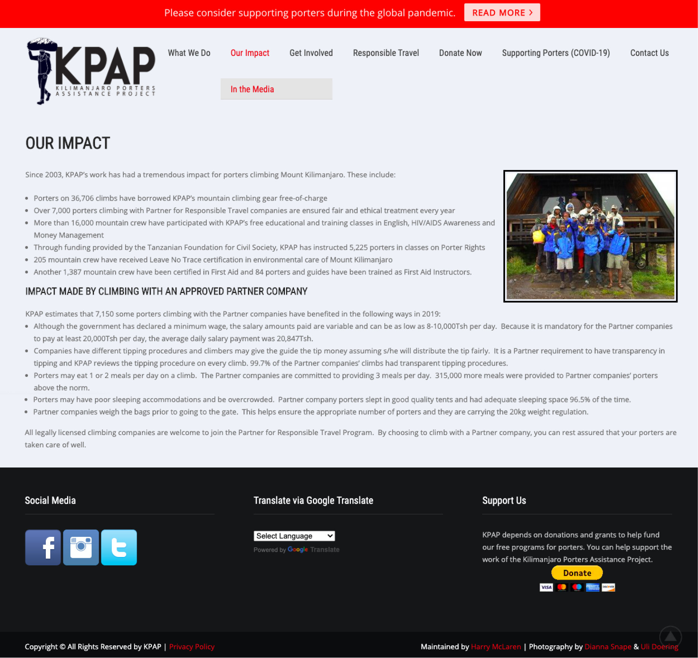
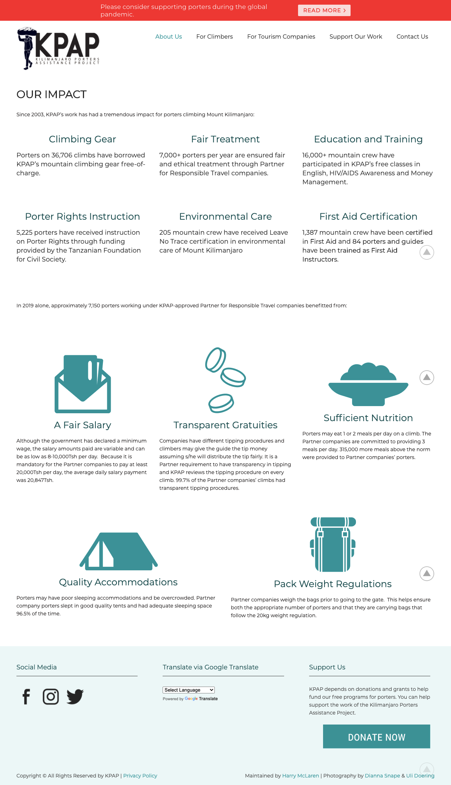
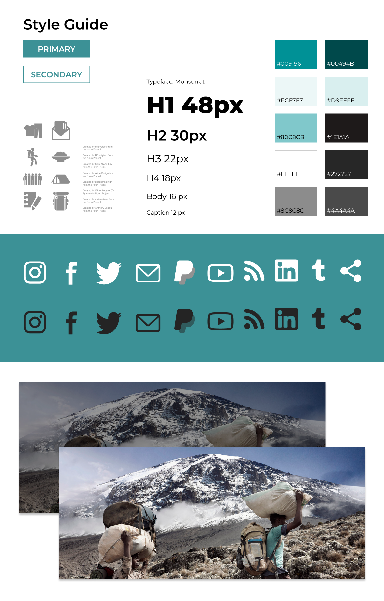
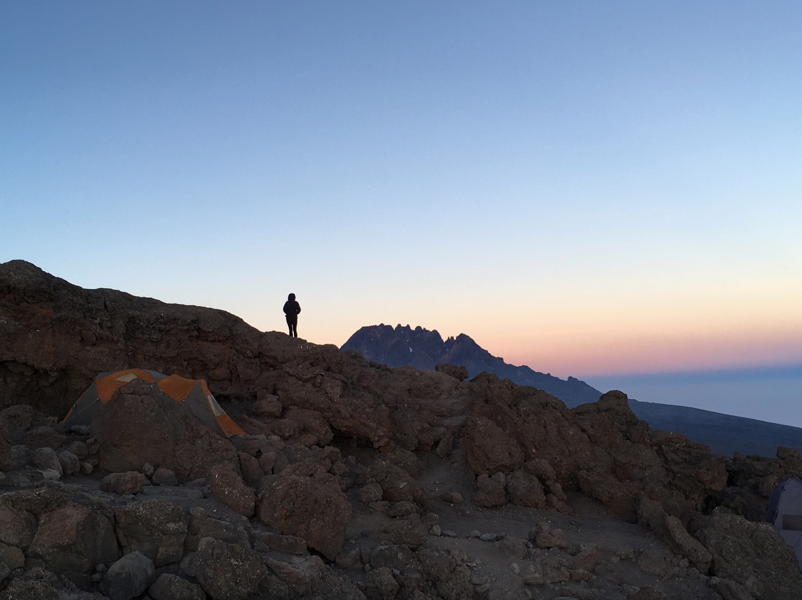
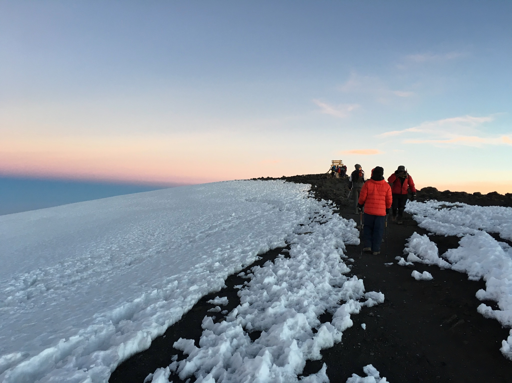
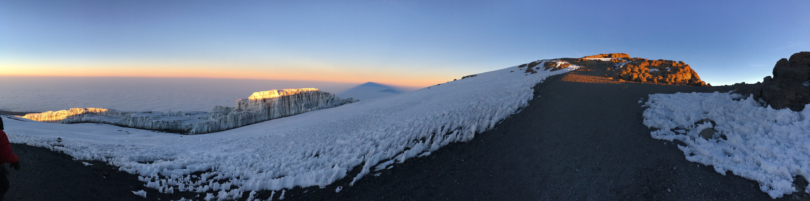
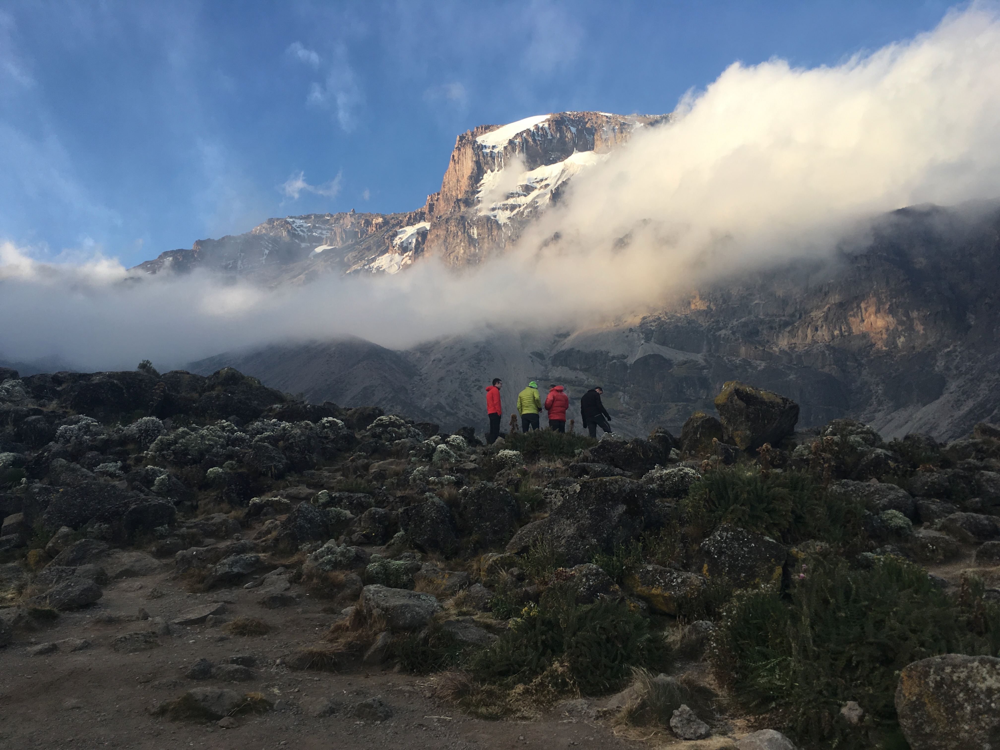
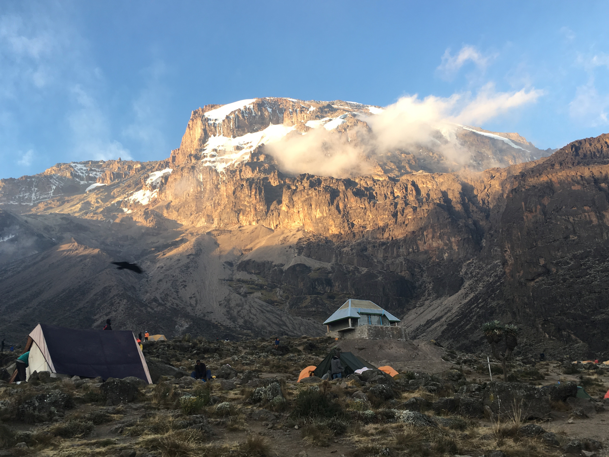
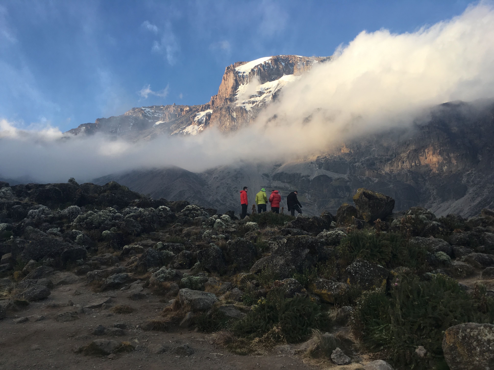
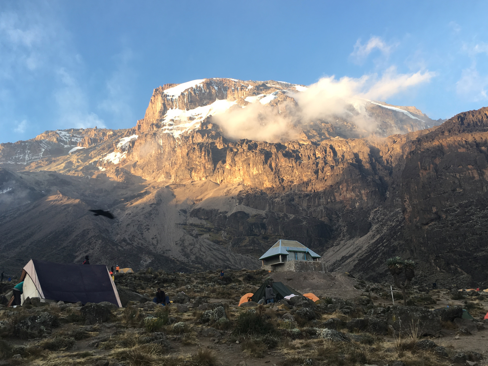

Kilimanjaro Porters Assistance Project
promoting responsible travel and ethical tourism on mount kilimanjaro
Summary
The Kilimanjaro Porters Assistance Project (KPAP) is a Tanzanian NGO focused on securing ethical treatment and fair pay for the porters on Mount Kilimanjaro. I worked with KPAP staff and volunteers to improve the usability and visual design of their website.
The Problem
KPAP offers supports Kilimanjaro porters through free gear rentals and educational and training opportunities. They also promote ethical mountain climbs through their Partner for Responsible Travel program. As a small non-profit based at the foot of Kilimanjaro, KPAP needed a website that effectively communicated their work and accomplished two key goals:
- Persuading visiting climbers to book with a KPAP-approved Partner for Responsible Travel
- Convincing tourism companies to commit to ethical practices and become a Partner for Responsible Travel
The onset of the COVID-19 pandemic deeply impacted the global tourism industry, which made communicating KPAP's work effectively online more crucial than ever. As a first step, I planned out a project scope that would have me looking at the site content and page structure across the site as well as making improvements to the UI.
Establishing Priorities
I met with the KPAP team in Tanzania and Scotland via Zoom to identify the technical constraints that would define my work. As KPAP is a small organization that relies heavily on volunteering, all designs needed to be easy to manage and update, and had to minimize complexity and render quickly on slow internet connections.
After asking tons of questions, I settled on a few directives to serve as my personal design principles:
- Lean and Fast: don't introduce complication or complexity unless absolutely necessary (a tenet I try to apply in every project!)
- More than the Mountain: show the human side of Kilimanjaro (the porters!) as much as possible
- Stellar Documentation: record the context and reasoning behind design decisions to ensure clarity far into the future
Determining Navigation Structure
When I analyzed behavior patterns on the existing site, I learned that most users were bouncing between unrelated pages before settling on the "Porter Treatment Guidelines and Tipping Recommendations" page or the "Becoming a Partner" page. It was clear that the information architecture on the existing KPAP site needed to be reconsidered in order to allow easier navigation to this key content.
Before anything else, I needed to rework the information architecture to match the needs of users visiting the site.
Tree Test Setup and Results
The site content needed to be structured in such a way as to create channels for the various users visiting the site: aspiring Kilimanjaro climbers, tourism companies, potential donors, and those looking to learn about KPAP. I examined the content of each page and created a new menu structure to test with users in a tree test.
Because access to users and time was limited, I opted for a tree test instead of a card sort and arranged the content in a way that created "channels" for each group of users from the top-level nav, such as "For Climbers" and "For Tourism Companies".
![Sample menu structure from tree test. The About Us section includes Our Impact and In the Media pages. The For Climbers section includes Climb with a Responsible Travel Company, Porter Treatment and Tipping Guidelines, and Share Information from your Climb. The For Tourism Companies section includes Why Partner with Us and Register as a Partner for Responsible Travel. The Donate section includes Supporting Kilimanjaro Porters during COVID-19 and Thanks to Our Donors. The Contact Us section includes one page, titled Email List Sign Up.](Images/KPAP_sample_menu_structure_tree_test.png)
20 users completed the tree test, and results confirmed that the proposed menu structure would enable aspiring climbers and tourism companies to find information relevant to them. The results also revealed that potential donors would look in three spots to learn about KPAP's cause: About Us, Donate, and Contact Us.
The site needed a message "selling" the impact of a donation in these three spots. While creating new copy was outside the project scope, I took note of this finding to incorporate it in future.
Putting the Content to Work
Now that the menu structure was in place, I needed to re-organize the existing content to match each page's purpose. I conducted an audit of the existing copy to determine the message and function of each section and assigned it to a group.
I re-worked the content with a focus on brevity, clarity, and intentional language choice.
Before:
Existing copy explaining KPAP's impact was originally quite text-heavy, with bolded text serving as the only means of hierarchy.
After:
I used meaningful iconography and hierarchy to make the message scannable. I also used language that would suit a global audience.
Establishing Visual Cohesion
I made changes that instantly added cohesion to the design and made stronger use of the professional photographs KPAP had on hand.
I eyedropped from a photo that I wanted to take center stage, and built the style guide around that color.
The Result
At the conclusion of this project, I delivered a re-designed website with clear information hierarchy, content structure, and improved visuals.

I really enjoyed working through the unique constraints and challenges this project presented. To learn more about my process, feel free to contact me.
Ethical tourism on Kilimanjaro is vital to maintaining the natural beauty of the mountain and the well-being of the community surrounding it. If you're considering a climb, consult KPAP's list of approved Partners for Responsible Travel. Asante Sana!
   


